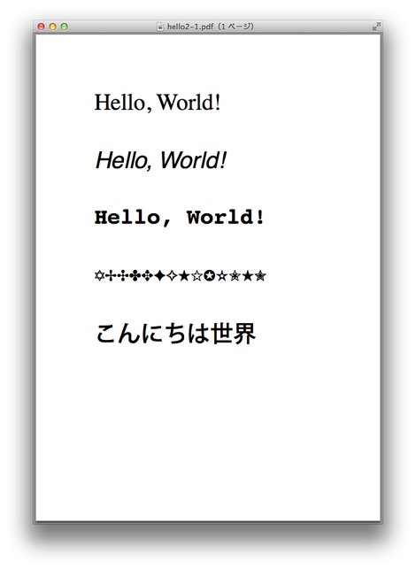
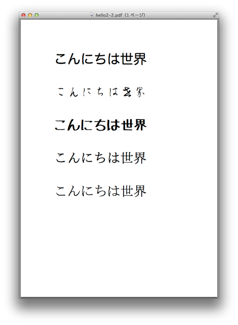

Hello World (2) ― フォントの指定 ―¶
前回作成した Hello World を発展させていきます。
標準フォントの指定¶
まずは，フィールドの数を増やした上で，それぞれのフィールドのフォントを指定します。 フォントを変更するには，各フィールドのfield辞書にfont属性を追加します。
// hello2.json
{
"template": {"paper": "A4"},
"context": {
"hello_1": {
"new": "Tx",
"value": "Hello, World!",
"rect": [100, 700, 400, 750],
"font": "/Times-Roman"
},
"hello_2": {
"new": "Tx",
"value": "Hello, World!",
"rect": [100, 600, 400, 650],
"font": "/Helvetica-Oblique"
},
"hello_3": {
"new": "Tx",
"value": "Hello, World!",
"rect": [100, 500, 400, 550],
"font": "/Courier-Bold"
},
"hello_4": {
"new": "Tx",
"value": "ABCDEFGHIJKLMN",
"rect": [100, 400, 400, 450],
"font": "/ZapfDingbats"
},
"hello_5": {
"new": "Tx",
"value": "こんにちは世界",
"rect": [100, 300, 400, 350],
"font": "/KozGo-Medium"
}
}
}

実行結果1
Field Reports 1.4では，14種類の欧文フォントと2種類の日本語フォントを標準フォントとして内蔵しています。これらの標準フォントであれば，前準備なしに単にフォント名を指定するだけで使用することができます。
日本語を表示する場合は，小塚明朝体フォントか小塚ゴシック体フォントを指定します。 フォントの指定を省略した場合は，小塚明朝体フォントがデフォルトとなります。
フォント・リソースの定義¶
標準以外のフォントを使いたい場合は，フォントファイルを元にフォントリソースを定義し，そのリソース名をフィールドのフォント名として指定します。
reports コマンドを使って，フォントリソースの雛形を作らせることもできます。
$ reports font --json HiraMaruGo_Pro_W4.otf
作成したパラメータファイルと実行結果を以下に示します。
// hello2-2.json
{
"resources": {
"font": {
// ヒラギノ丸ゴシック
"HiraMaruPro-W4": {
"src": "./HiraMaruGo_Pro_W4.otf"
},
// 衡山毛筆フォント
"KouzanBrushFontSousyoOTF": {
"src": "./KouzanSoushoOTF.otf"
},
// たぬき油性マジック
"Tanuki-Permanent-Marker": {
"src": "./TanukiMagic.ttf"
},
// IPAmj明朝フォント
"IPAmjMincho": {
"src": "./ipamjm.ttf"
},
// MS明朝フォント
"MS-Mincho": {
"src": "./msmin04.ttc"
}
}
},
"template": {"paper": "A4"},
"context": {
"hello_1": {
"new": "Tx",
"value": "こんにちは世界",
"rect": [100, 700, 400, 750],
"font": "HiraMaruPro-W4"
},
"hello_2": {
"new": "Tx",
"value": "こんにちは世界",
"rect": [100, 600, 400, 650],
"font": "KouzanBrushFontSousyoOTF"
},
"hello_3": {
"new": "Tx",
"value": "こんにちは世界",
"rect": [100, 500, 400, 550],
"font": "Tanuki-Permanent-Marker"
},
"hello_4": {
"new": "Tx",
"value": "こんにちは世界",
"rect": [100, 400, 400, 450],
"font": "IPAmjMincho"
},
"hello_5": {
"new": "Tx",
"value": "こんにちは世界",
"rect": [100, 300, 400, 350],
"font": "MS-Mincho"
}
}
}

実行結果2